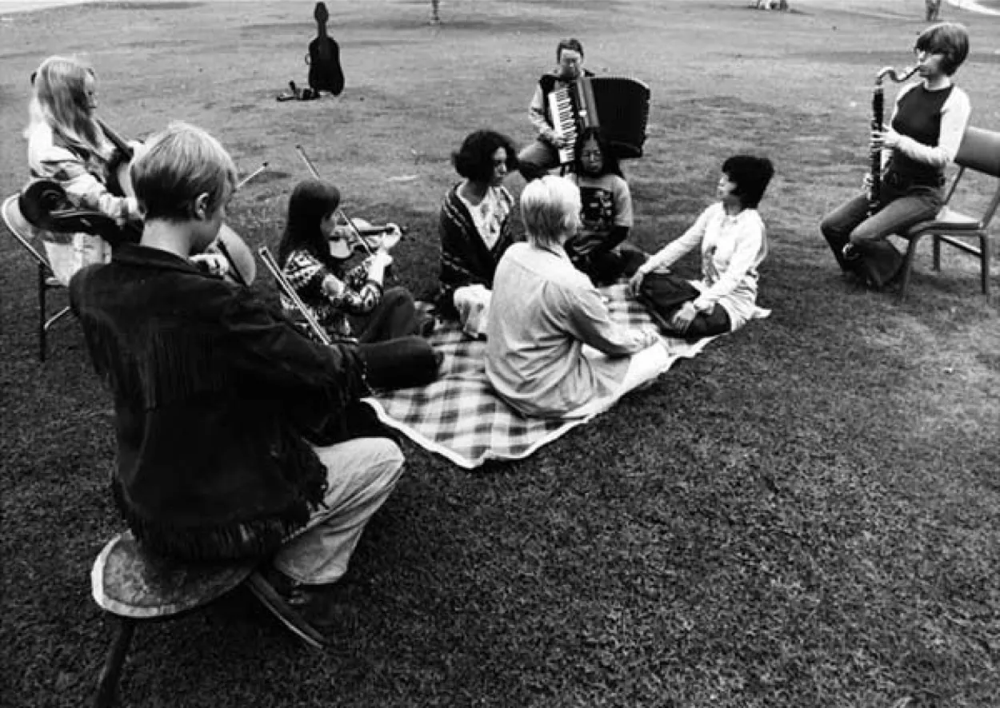

About Mutual ART FINDER
Art is one way which our community can heal one another. It is a tool that can deepen Jenny Odell's idea of sensitivity with oneself or through the community as we as community members can speak to one another with art!
Despite this, artists and art-related mutual aid events are often on the peripheries of mutual aid networks. You have to do the work yourself to find something art related on whichever social media platform both you and mutual aid networks are on. This can make finding art-related events and mutual aid artists a bit more challenging to find!
Thus, this site is born to act as a respository where we can highlight various forms of mutual aid related art in our communities--whether this be learning how to watercolor from a neighbor or supporting friends in need by fundraising via art raffles.
Pauline Oliveros (with the accordion) and the ♀ Ensemble performing Sonic Meditations, 1970, Rancho Santa Fe, CA (scan: Bradford Bailey)